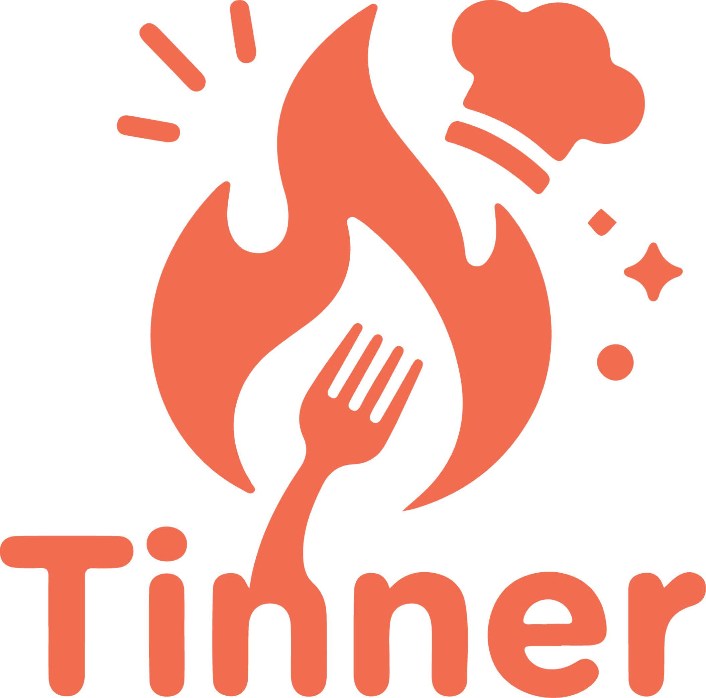
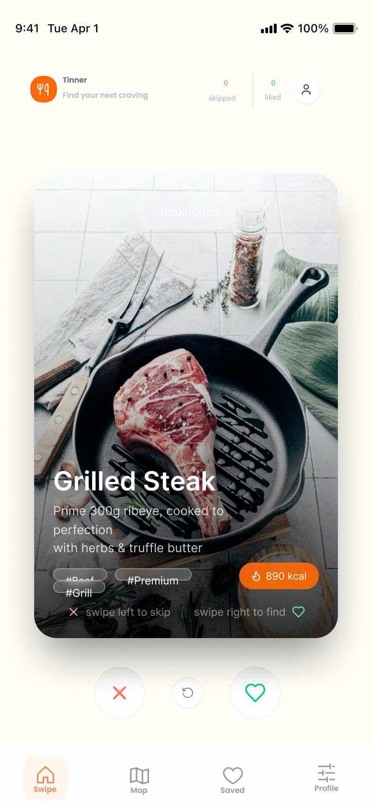
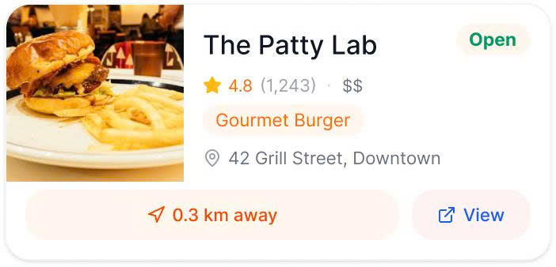
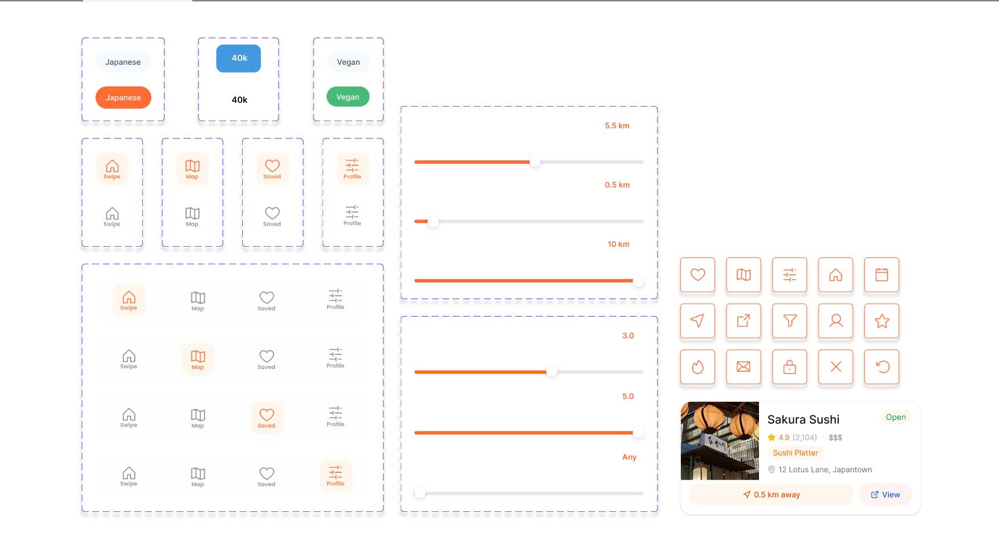
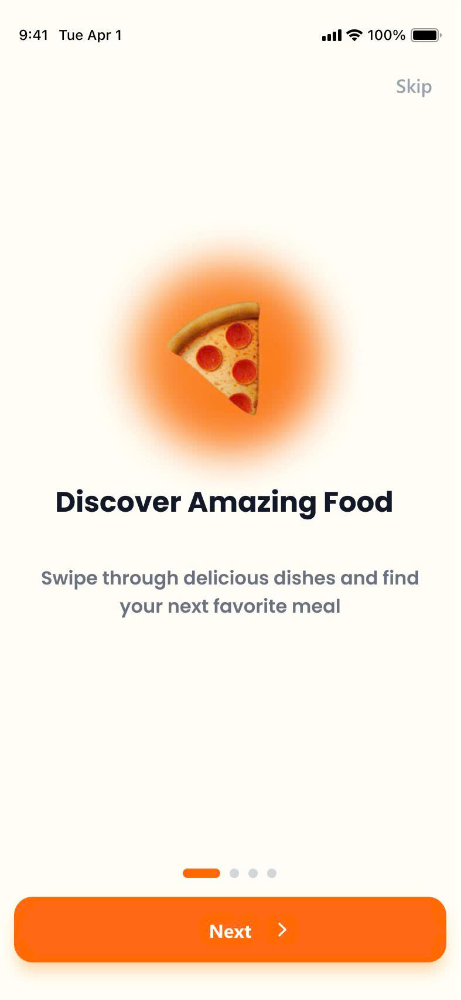
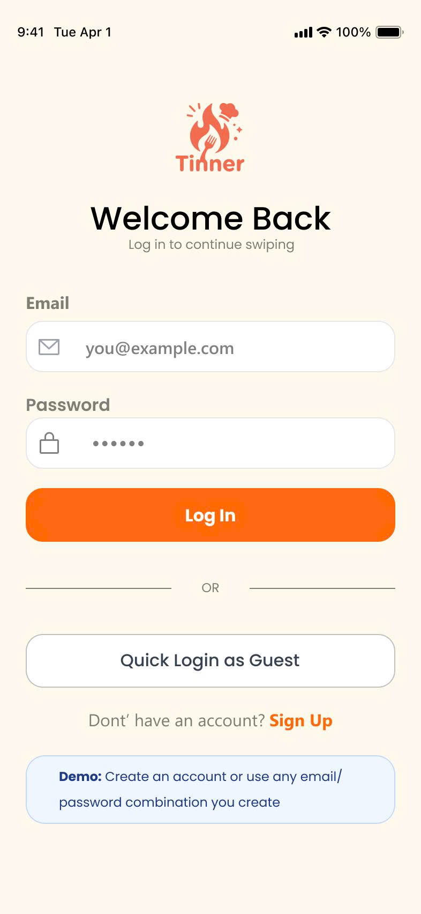
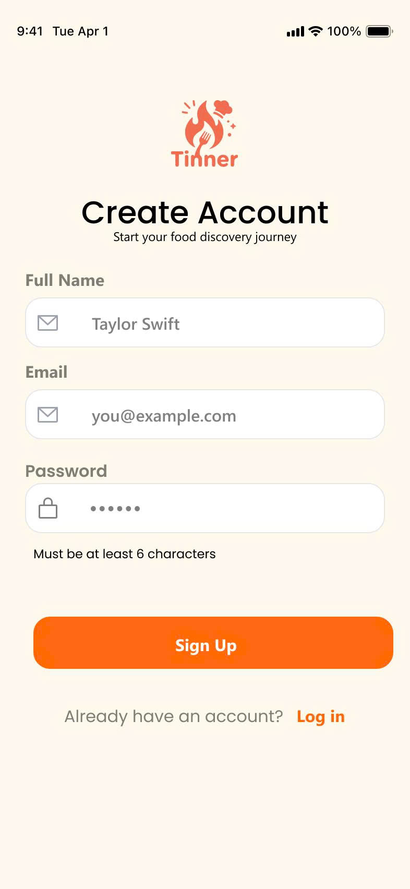
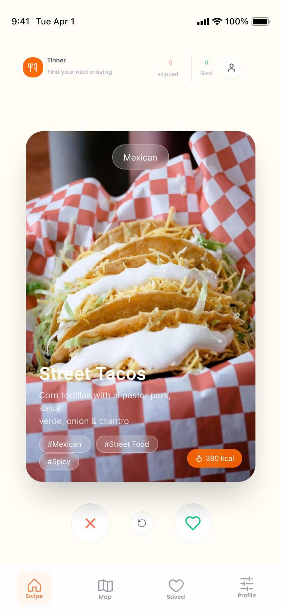
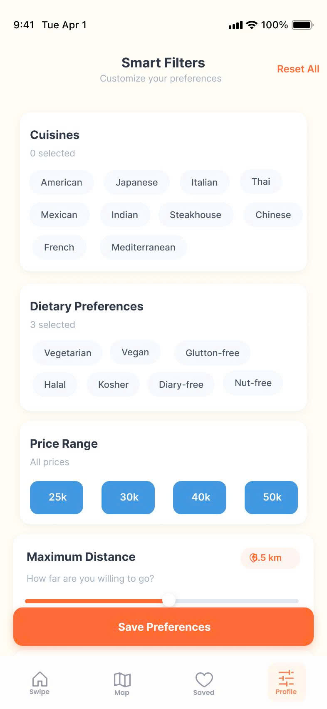
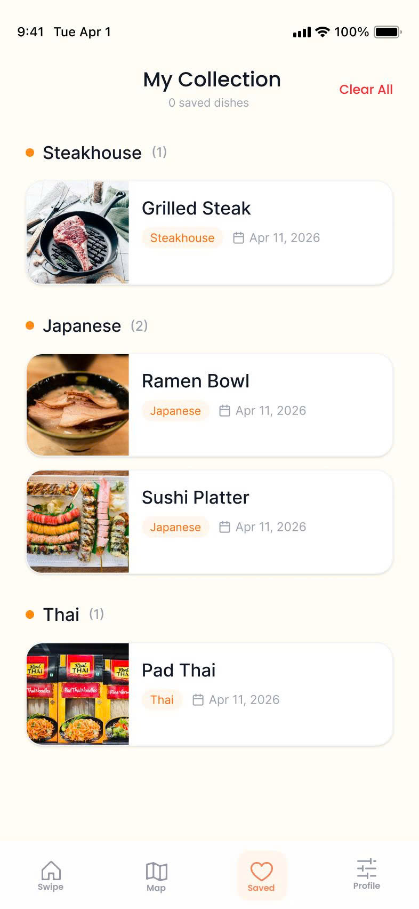

End the "What's for dinner?" debate.
"Swipe To Bite" - Solve the "Paradox of Choice". Go from opening the App to deciding on a meal in under 5 minutes.
🍔 Stop arguing over dinner. Discover food visually.

The Pain Point
Current food delivery apps overwhelm users with endless scrollable lists, causing "Analysis Paralysis" and Decision Fatigue. Tinner solves this by simplifying the decision-making process to the maximum.
-
Single-View Interface
Only displays one dish at a time. No distractions, minimizing information overload.
-
Gamified Experience
"Swipe Left - Swipe Right". Turns stressful food selection into a fun game.
Target Users & Value Proposition
Tinner helps people who are hungry but stuck in “choice overload” decide fast—without endless scrolling, arguing, or random picks.
Target users
- Gen Z & Millennials (18–35) in urban areas who eat out / order frequently.
- Students & office workers who want a quick lunch/dinner decision.
- Couples / groups who often debate “eat what?” and need a fair consensus.
Value proposition
A decision-first restaurant discovery experience: swipe through curated dishes one by one, reduce cognitive overload, and reach a confident choice in under 5 minutes.
MVP scope (what we ship first)
Swipe left/right on food images → instantly reveal the restaurant behind a liked dish → review a visual restaurant info card (images, address, opening hours, basics) and decide.
Problem statement (from research)
People spend ~15–20 minutes scrolling delivery apps and still feel unsure. Too many options + unstructured info causes decision fatigue and “analysis paralysis”—especially for everyday casual dining.
Why Tinner (Market Fit)
Research shows the market is fragmented: some platforms are engaging but unstructured (TikTok/YouTube), others are structured but overwhelming (Google Maps), and delivery apps optimize for ordering—not discovery.
What others optimize for
- Grab/ShopeeFood: fast transactions & promos, not discovery.
- TikTok/YouTube: inspiration & trends, no structured comparison.
- Google Maps: reliable data, but information overload.
What Tinner optimizes for
Fast, enjoyable decision-making: curated options + swipe interaction + visual info cards—combining structure with engagement.
Outcome
Less scrolling, less arguing, fewer random choices—more confidence and speed when deciding where to eat.
Core MVP Features
From opening the app to deciding in under 5 minutes.

Swipe-to-Match Logic.
Users swipe left (pass) or right (like) on food images. Upon liking a dish, the application immediately reveals the corresponding restaurant that serves it.

Visual Restaurant Info Cards.
Visually displays detailed information about the matched restaurant, including food images, address, opening hours, and basic details for the final decision.
Selected Screens & Design Elements
A quick visual tour of key screens and UI components from the prototype and MVP build.







Tech Stack
The core technologies powering the Tinner project for CO3043-PTAD.
-
Java & Spring Boot
Robust backend architecture managed via Maven.
-
Figma
Complete UI/UX design system and visual prototypes.
-
GitHub Pages
Static deployment and source code management.
Team Members
CO3043-PTAD Project Development Team